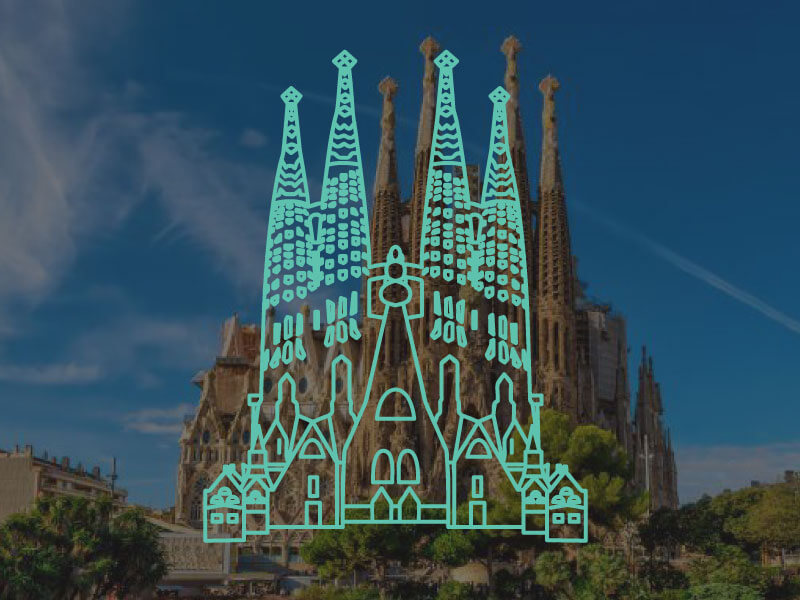

Sagrada Família
The Basílica i Temple Expiatori de la Sagrada Família is a large unfinished Roman Catholic church in Barcelona, designed by Catalan architect Antoni Gaudí (1852–1926). Gaudí’'s work on the building is part of a UNESCO World Heritage Site.
In 1882, construction started under architect Francisco de Paula del Villar. In 1883, when Villar resigned, Gaudí took over as chief architect. Gaudí devoted the remainder of his life to the project, and at the time of his death at age 73 in 1926, less than a quarter of the project was complete.
Describing Sagrada Família, art critic Rainer Zerbst said “it is probably impossible to find a church building anything like it in the entire history of art”, and Paul Goldberger describes it as “the most extraordinary personal interpretation of Gothic architecture since the Middle Ages”.